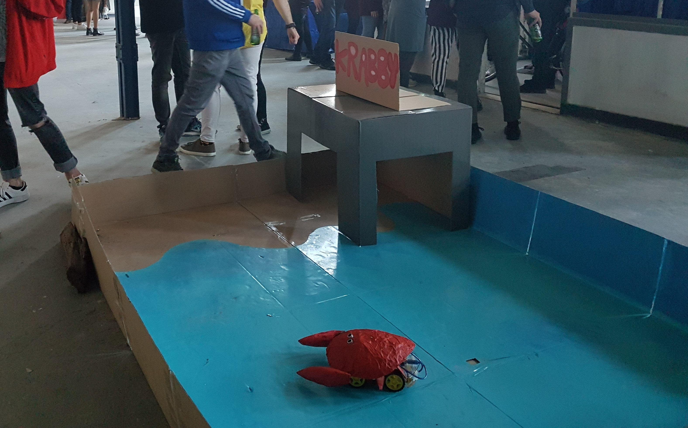
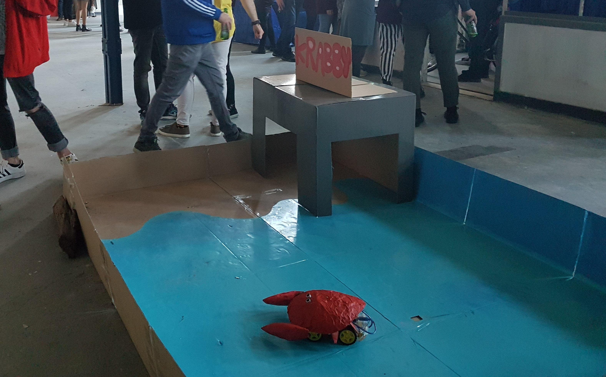

Product
Mocht de video niet werken, klik dan hier
Na twee weken hard werken presenteren wij aan u, Krabby! Krabby is een krabrobot die enorm houdt van donkere plekken. Hoewel hij graag in z'n holletje zit, komt hij er ook graag uit om kennis te maken met mensen. Dit vindt hij eng, omdat hij een beetje bang is van mensen. Als Krabby zijn huisje verlaat, wil hij zo snel mogelijk weer terug. Helaas zijn z'n ogen niet zo goed, dus is het lastig voor hem om zijn weg terug te vinden. Voor op zijn schedel heeft Krabby een ultra sonic sensor. Met deze sensor kan Krabby bepalen of objecten binnen zijn gezichtsveld zijn, waarnaar hij naar achteren gaat. Krabby is zo geprogrammeerd, dat hij 1 op de 5 keer linksaf gaat, 1 op de 5 keer rechtsaf en 3 op de 5 keer rechtdoor. We hebben hiervoor gekozen, omdat we het belangrijker vinden dat hij rechtdoor gaat dan links of rechts. Zodra hij een muur tegenkomt, gaat Krabby recht achteruit en pas daarna kiest hij ervoor om links of rechtsaf te gaan. De basis van Krabby bestaat uit de auto. Deze auto wordt met code aangestuurd, dus of hij links, rechts of rechtdoor gaat. Op de auto zit een arduino met een shield erop, hierin zit alle code van de auto zelf. Verder zit er nog een andere arduino op de auto. Hiermee worden de servo's aangestuurd, waarmee de krab zijn klauwen kan bewegen. Het idee was om de klauwen te laten bewegen wanneer een bezoeker binnen het "gezichtsveld" van de ultrasonic sensor op de schedel komt, maar omdat deze constructie vlak voor de expo brak, hebben we ervoor gekozen om de klauwen in sequencies automatisch te laten bewegen. Uiteindelijk was dit een betere keuze, omdat het er zo natuurlijker uit ziet. Maar uiteraard heeft dit er wel voor gezorgd dat mensen er geen interactie mee kunnen hebben.

 
